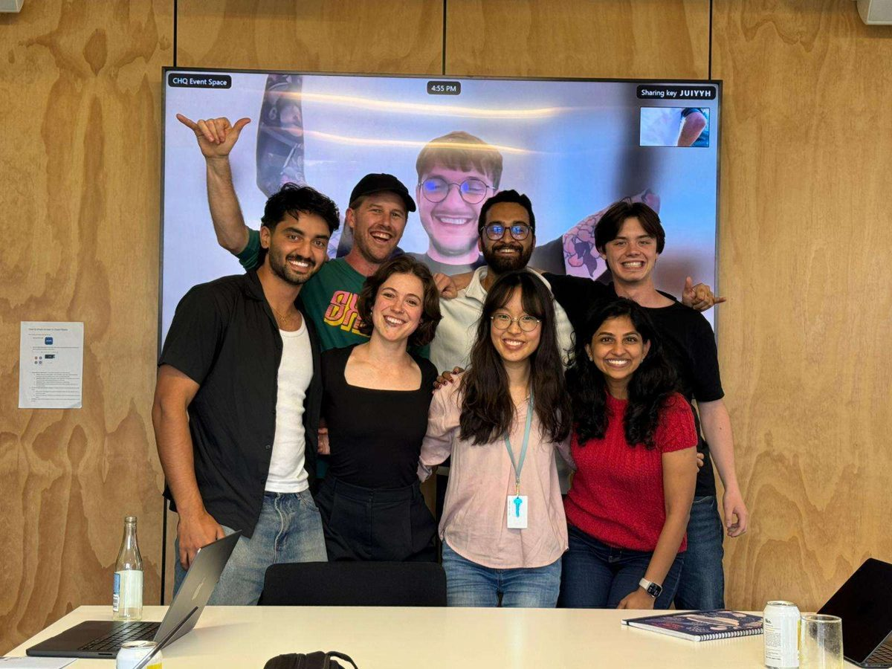
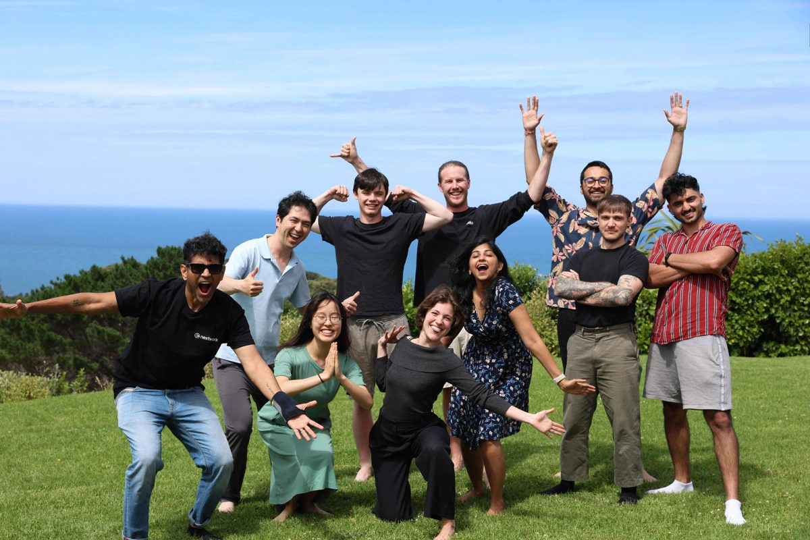
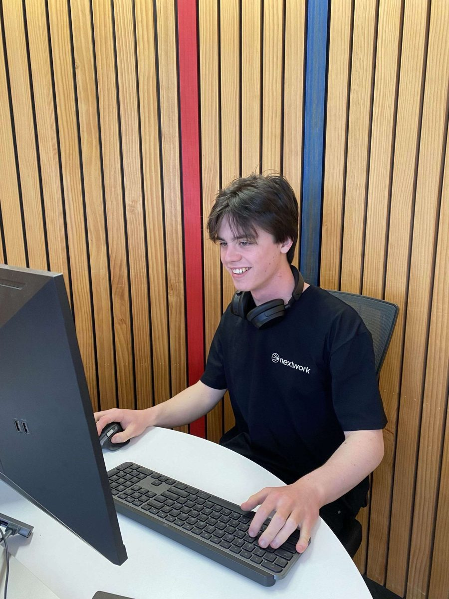

Product engineer, September 2025 to April 2026. Wellington, then Austin for a bit in March 2026, then back to NZ to finish my degree lol. nextwork.ai

Eight people, one room most days, whoever was away dialled in on the big screen.

The off-site. A few of the founders around the company came too. I got to sit and talk with Bowen Pan, who started Facebook Marketplace, and Mahesh Muralidhar, who runs Phase One, about engineering, product, and how careers in tech actually go. You do not get that at a big company.

Me in the office in Te Aro.
NextWork makes learning modules that teach people to use AI coding tools. 200,000+ users, three engineers, about eight people all up. While I was there we raised a NZ$7M seed round, which I helped with.
I wrote about twenty modules by hand first, over six months. That set the bar for what a good one looked like. Then I built the pipeline that writes them now.
It brainstorms what the module should be about, researches in stages through MCP tools (Firecrawl, Exa, Context7), then compiles the module against a big rule set. If it covers X it must do Y, if it does Y it must show Z, if it shows Z it uses wording W. Different models at different stages, picked for cost and speed. Out the other end is block-structured JSON, compiled and served to the page. The compiler started in Python and moved to C/C++ and Go once the design settled.
Writing a module went from 7+ days to under a day. Weekly active user growth went from flat to about 15% month on month. Every module still gets reviewed before publish, by everyone building social content from it and by the CEO.
I also recorded 40+ video walkthroughs on Claude Code, Cursor, and other AI tools. This is one of them, building an AI finance agent with Amazon Bedrock.
Drove product direction and decided what to ship to grow MRR. Wrote the product spec for the core learning module, which is what made automating it possible. Got AI coding tools into everyone's workflow, PR output went up 75% with no drop in quality. Migrated the frontend from web components to React in three weeks. Built internal tooling in Python and Go for standardising project specs and validating requirements. Pushed back on fuzzy requirements before they reached engineering. Someone had to haha.